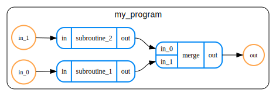

Data format
Introduction
QREF format is a domain-specific language (DSL) for describing quantum algorithms built on top of JSON for the purpose of resource estimation.
In QREF, the algorithms are described as programs comprising hierarchical, directed acyclic graph (henceforth hierarchical DAGs) of subroutines. Let's break down what this means:
- Hierarchical means that routines can be nested.
- Directed means that every edge connecting two routines also defines in which direction the information flows between them.
- Acyclic means that traversing the graph along its edges (respecting their direction) will never lead to visiting the same node twice.
Besides specifying the connectivity between routines in the algorithms, the QREF format also specifies how to store information relevant to resource estimation, such as known and unknown resources, parameters that might affect them and how the parameters propagate in the algorithm's graph.
Before describing the format in detail, let us first exemplify its usage on a simple program.
Basic example
In QREF, the quantum programs are represented as graphs. If you are not used to representing computations as graph, don't worry! Before describing QREF format, we'll demostrate how a simple circuit can be represented as a graph.
Consider a hypothetical quantum program as depicted in the following circuit.

Let's forget for a while that the depicted algorithm doesn't make much sense. We can see that the circuit comprises two subroutines:
subroutine_1operating on a single-qubit register.subroutine_2operating on a two-qubit register.
We also labelled inputs to the subroutines as in_0 and in_1, and the whole
output of our program (i.e. combined outputs of both subroutines) as out.
Representing such a circuit as a graph is straightforward, it might look like this:

As we can see, the graph contains both subroutines form the original circuit,
and an artificially introduced merge operation used to combine outputs
from the subprograms into one final outputs.
Now that we have our graph, let's see how it can be represented in QREF format. As already mentioned, QREF format is built on top of JSON, so we can write QREF files in either JSON or YAML. For our examples, those might look as follows:
version: v1
program:
name: my_program
ports:
- { direction: input, name: in_0, size: 1 }
- { direction: input, name: in_1, size: 2 }
- { direction: output, name: out, size: 3 }
children:
- name: subroutine_1
ports:
- { direction: input, name: in, size: 1 }
- { direction: output, name: out, size: 1 }
- name: subroutine_2
ports:
- { direction: input, name: in, size: 2 }
- { direction: output, name: out, size: 2 }
- name: merge
ports:
- { direction: input, name: in_0, size: 1 }
- { direction: input, name: in_1, size: 2 }
- { direction: output, name: out, size: 3 }
connections:
- { source: in_0, target: subroutine_1.in }
- { source: in_1, target: subroutine_2.in }
- { source: subroutine_1.out, target: merge.in_1 }
- { source: subroutine_2.out, target: merge.in_0 }
- { source: merge.out, target: out }
{
"version": "v1",
"program": {
"name": "my_program",
"ports": [
{
"direction": "input",
"name": "in_0",
"size": 1
},
{
"direction": "input",
"name": "in_1",
"size": 2
},
{
"direction": "output",
"name": "out",
"size": 3
}
],
"children": [
{
"name": "subroutine_1",
"ports": [
{
"direction": "input",
"name": "in",
"size": 1
},
{
"direction": "output",
"name": "out",
"size": 1
}
]
},
{
"name": "subroutine_2",
"ports": [
{
"direction": "input",
"name": "in",
"size": 2
},
{
"direction": "output",
"name": "out",
"size": 2
}
]
},
{
"name": "merge",
"ports": [
{
"direction": "input",
"name": "in_0",
"size": 1
},
{
"direction": "input",
"name": "in_1",
"size": 2
},
{
"direction": "output",
"name": "out",
"size": 3
}
]
}
],
"connections": [
{
"source": "in_0",
"target": "subroutine_1.in"
},
{
"source": "in_1",
"target": "subroutine_2.in"
},
{
"source": "subroutine_1.out",
"target": "merge.in_1"
},
{
"source": "subroutine_2.out",
"target": "merge.in_0"
},
{
"source": "merge.out",
"target": "out"
}
]
}
}
Let's dissect our example. The top-level object has two mandatory properties:
version: Set tov1(which is the only version so far)program: This contains the actual description of the program.
So what do we have in a program object?
name: Mandatory name of the program, here set to the stringmy_program.ports: A collection of ports. They roughly correspond to quantum registers.children: A list of children, or subroutines, of the program.connections: A list defining edges of our graph.
Ports
Let us first take a look at ports, like the first input port of our program:
Ports, like most other components in QREF, have names, which should be distinct
among all ports of any given program (or subroutine). Each port also has
direction, which can be either input or output. Finally, each port has size.
In our simple scenario, all sizes are positive integers. However, QREF
is not limited to them, and size of a port can be either:
- A positive integer.
- A symbol or symbolic expression (e.g.
Nor2L + 1) - A
null, signifying that the size of the port can be deduced from sizes of other ports it is connected to (possibly transitively).
Children
The children list comprises all subroutines of the program. Each entry has the
same structure as the program itself (one could say that the schema of the program
is recursive). In particular, each child should have a name (unique in the scope
of their immediate parent) and some ports. They can also have connections, and their
own children.
Connections
The last component of any program (and most subroutines) are connections defining the
edges of a graph. The connections field is a list of objects, each having source
and target. Both source and target can either be:
- A name of the port of the program/subroutine the connection belongs to, i.e.
out_0 - A reference to a port of one of program/subroutine's direct children.
Such a reference is formatted as
child.port_name.
There are three types of connections:
- Connections joining two distinct children, e.g.
- Connections joining a child and its parent. e.g.: or
- Connections joining input and output port of a parent, known as passthroughs. There are no passthroughs in our simple example, but one could look like: